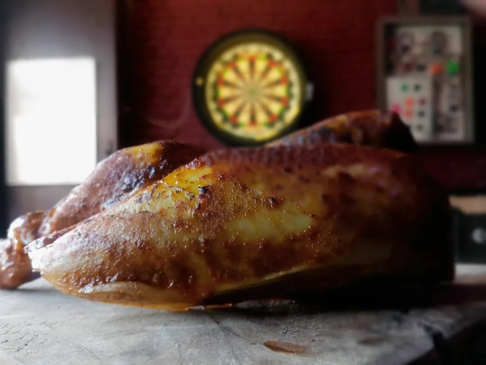
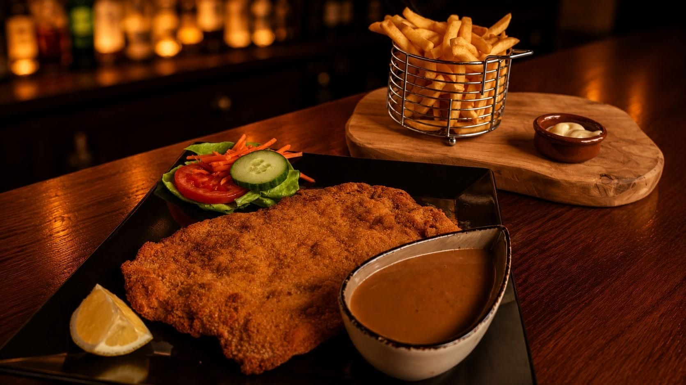
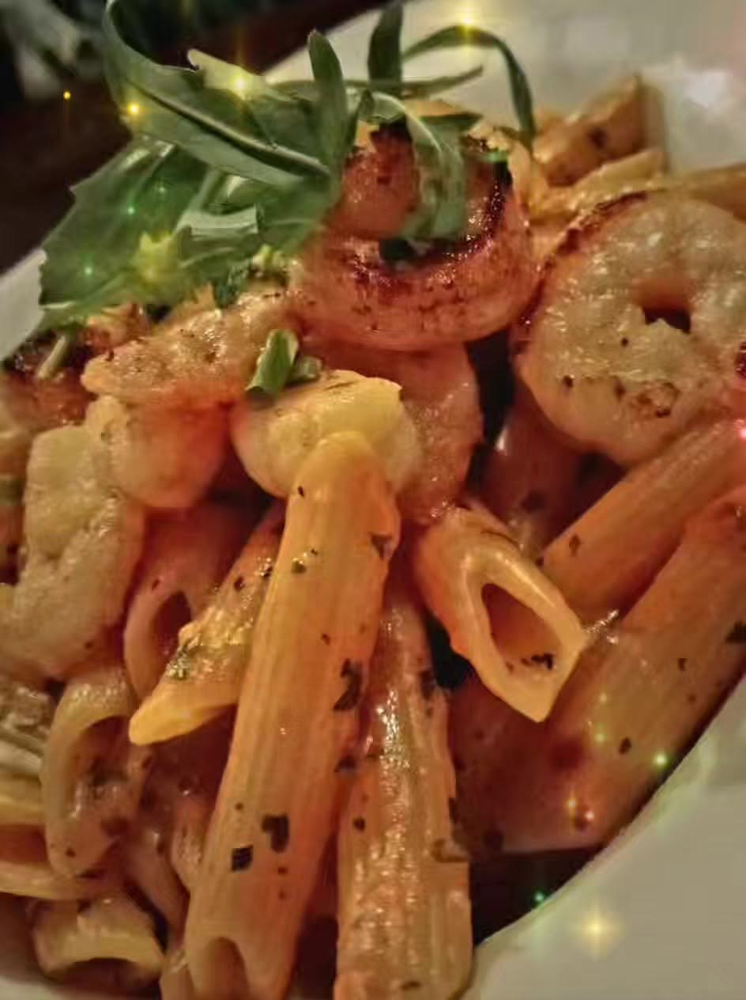
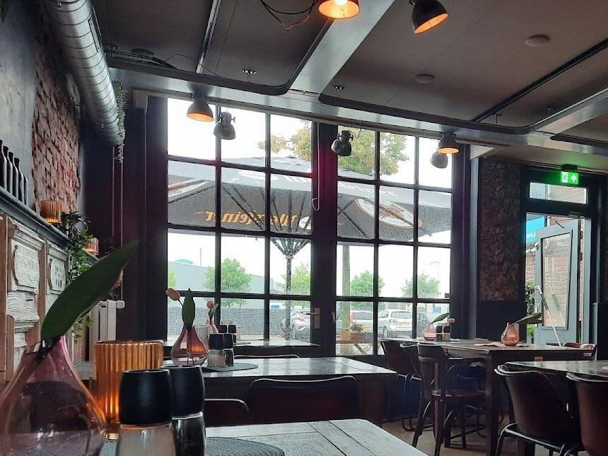
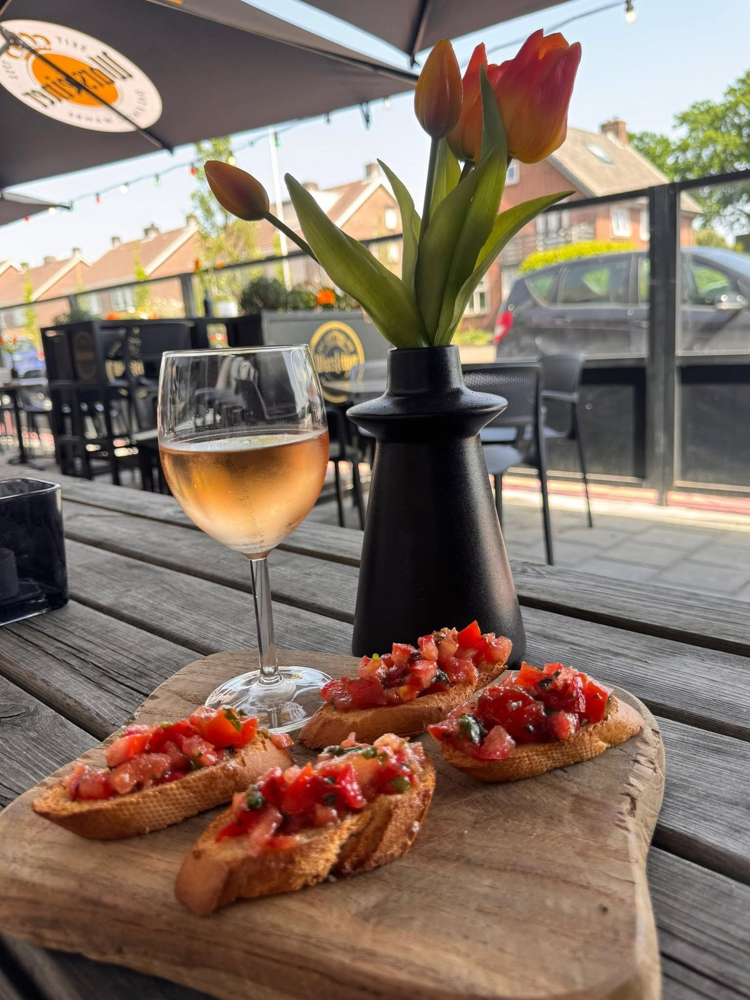
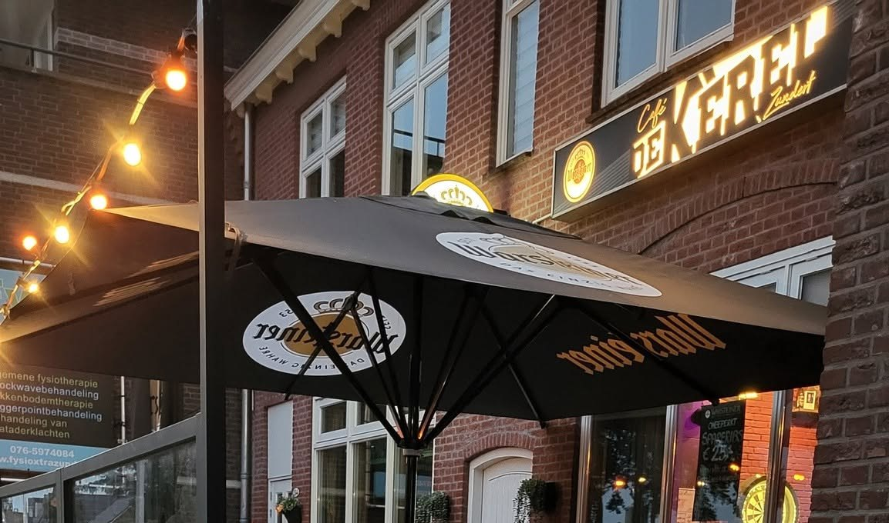

Hap van de week
Halve haan
€ 15Met frietjes en appelmoes.

Voel je thuis en welkom in ons warme en sfeervolle (eet)café aan de Molenstraat. Café De Kèrel en Foodbar de Buren onder één dak: voor een biertje, een hapje of de hele avond.
Eten doe je bij ons gewoon in het café. Van een schnitzel met friet tot streetfood, en elke week een Hap van de week.

Met frietjes en appelmoes.

Met een heerlijke kreeftensaus.
Sushi met een krokant jasje, in de smaken California en Vega. Met wasabi- en sriracha-mayo en wakame. Lekker als barhap of als voorgerechtje.

Café De Kèrel is een warm en sfeervol café waar je je thuis voelt. Kom voor een goed glas bier, een speciaalbiertje of een wijntje, en blijf hangen.
We zijn er op alle sportgebied bij: Formule 1, darts en Europees en Nederlands voetbal op de schermen. En soms draaien we de hele dag Nederlandstalig en golden oldies, met de karaokeset standby.
Schijnt het zonnetje? Dan zit je bij ons buiten onder de parasol, met een drankje en een hapje erbij.
“Ben er voor het eerst geweest maar wat een heerlijke tent”
Ed Lokkers, Facebook“Gewoon gezellig, wordt meestal latertje”
Mart Mouws, Facebook
Met een groep komen, of zeker zijn van een plekje bij de wedstrijd? Bel of app ons even.
